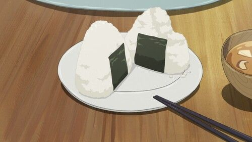

Receitas em Destaque


Dorayaki do Doraemon
As panquecas doces que o robô azul mais ama. Fofinhas e deliciosas!
Ver Receita
Amendoim do Tico e Teco
Docinho crocante e caramelizado — perfeito para as travessuras da dupla!
Ver ReceitaPanquecas do Ursinho Pooh
Fofinhas e douradas, cobertas com mel — o lanche favorito do Pooh!
Ver Receita
